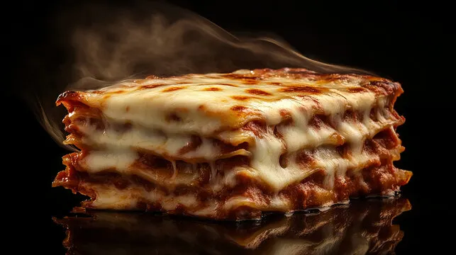

Lasanga
Home

Ingredients
- 1 lb ground beef
- 1 onion, chopped
- 2 cloves garlic, minced
- 1 can (15 oz) tomato sauce
- 1 can (6 oz) tomato paste
- 1 can (14.5 oz) diced tomatoes
- 2 tsp dried basil
- 1 tsp dried oregano
- Salt and pepper to taste
- 12 lasagna noodles
- 16 oz ricotta cheese
- 2 cups shredded mozzarella cheese
- 1/2 cup grated Parmesan cheese
Instructions
- Preheat oven to 375°F (190°C).
- In a large skillet, cook ground beef, onion, and garlic over medium heat until meat is no longer pink; drain excess fat.
- Add tomato sauce, tomato paste, diced tomatoes, basil, oregano, salt, and pepper. Simmer for 30 minutes, stirring occasionally.
- Cook lasagna noodles according to package instructions; drain and rinse with cold water.
- In a mixing bowl, combine ricotta cheese, 1 cup mozzarella cheese, and Parmesan cheese.
- Spread a thin layer of meat sauce in the bottom of a 9x13 inch baking dish. Layer with 4 lasagna noodles, one-third of the ricotta mixture, and one-third of the meat sauce. Repeat layers twice, ending with meat sauce.
- Top with remaining mozzarella cheese.
- Cover with aluminum foil and bake for 25 minutes. Remove foil and bake for an additional 25 minutes or until cheese is bubbly and golden brown.
- Let stand for 10 minutes before serving.